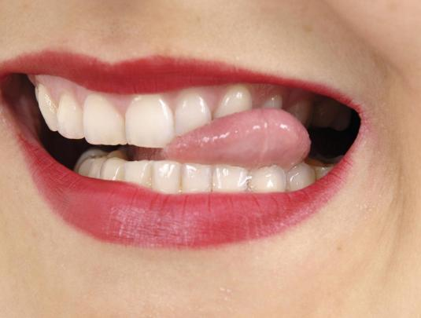

CONSULTA A NUESTROS EXPERTOS
¿Qué significa soñar con perder dientes? Descifrando los Mensajes Ocultos de tus Sueños Nocturnos
Redactor: Admin
Soñar con perder dientes es una experiencia que a menudo provoca inquietud y desconcierto. Este sueño común ha desconcertado a las personas a lo largo de la historia, y su interpretación puede variar según la cultura y las experiencias personales. Vamos a sumergirnos en el simbolismo de este sueño y explorar posibles significados que podrían estar detrás de la pérdida dental onírica.
Motivos por los que puedes tener este sueño:
1. Ansiedades sobre la Apariencia: Soñar con perder dientes a menudo está vinculado a ansiedades sobre la apariencia personal. Puede reflejar inseguridades acerca de la imagen que proyectamos al mundo y el miedo al juicio de los demás. Reflexiona sobre si hay situaciones en tu vida que te hacen sentir expuesto o vulnerable.
2. Temores al Envejecimiento: Este sueño también puede estar relacionado con el temor al envejecimiento y a la pérdida de juventud. La conexión entre los dientes y la vitalidad puede manifestarse en sueños como una preocupación subconsciente sobre el paso del tiempo y sus efectos en nosotros.
3. Pérdida de Control: La pérdida de dientes en sueños a veces se interpreta como un símbolo de pérdida de control en la vida real. Puede estar relacionado con situaciones en las que te sientes impotente o incapaz de manejar ciertos aspectos de tu vida. Reflexiona sobre áreas en las que te gustaría tener más control.
4. Miedo a la Vulnerabilidad: Soñar con perder dientes también puede indicar miedo a la vulnerabilidad. Los dientes desempeñan un papel importante en la autoprotección, y la pérdida de ellos en sueños puede simbolizar una sensación de desprotección o miedo a ser herido emocionalmente.
5. Cambios y Renovación: A pesar de las connotaciones negativas, la pérdida de dientes en sueños a veces se interpreta como un símbolo de cambio y renovación. Puede ser una señal de que estás dejando atrás viejas formas de pensar o aspectos de tu vida para dar paso a algo nuevo.
Consejos para interpretar tu propio sueño de perder dientes:
Observa las Emociones Asociadas: Presta atención a cómo te sientes durante y después del sueño. Las emociones pueden proporcionar pistas valiosas sobre el significado del sueño.
Considera tu Situación Personal: Reflexiona sobre eventos o situaciones en tu vida actual que podrían estar relacionados con la sensación de pérdida en el sueño.
Analiza la Salud Dental: A veces, estos sueños pueden estar vinculados a preocupaciones sobre la salud dental. Considera si tu sueño podría reflejar inquietudes sobre el cuidado de tus dientes.
Busca Patrones Recurrentes: Si sueñas con perder dientes con frecuencia, presta atención a cualquier patrón recurrente. Los sueños persistentes pueden indicar temas subyacentes que necesitas abordar.
Reflexiona sobre Cambios en tu Vida: ¿Estás experimentando cambios significativos en tu vida? La pérdida de dientes en sueños podría reflejar la adaptación a nuevas circunstancias.
Soñar con perder dientes es una experiencia que ha intrigado a la humanidad durante siglos. Este sueño puede ser un recordatorio de nuestras ansiedades, temores y procesos de cambio. Al explorar estas interpretaciones, podemos ganar una comprensión más profunda de nosotros mismos y utilizar esa sabiduría para el crecimiento personal.
Recuerda que la interpretación de los sueños es altamente subjetiva, y este artículo proporciona solo algunas perspectivas comunes. ¡Espero que encuentres útil esta exploración de los significados detrás de los sueños de perder dientes!